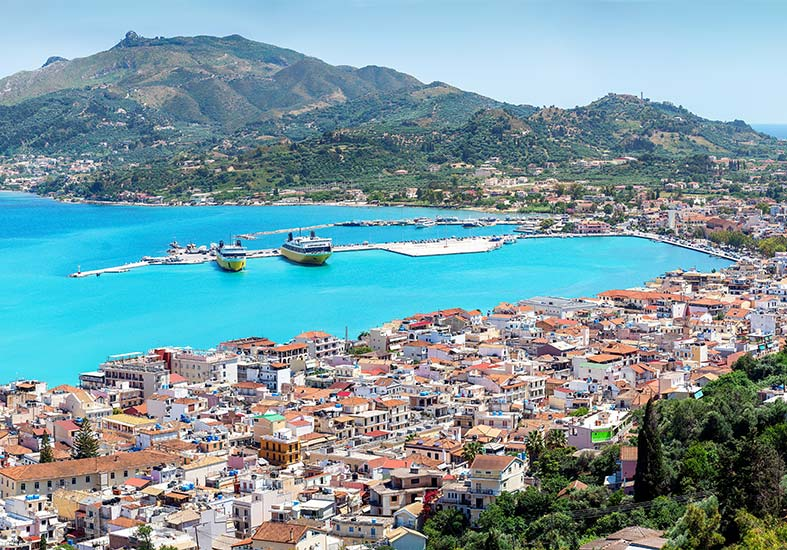
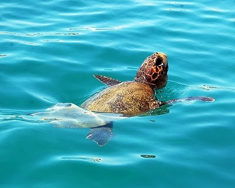

Zakynthos, often referred to as Zante, is a picturesque Greek island nestled in the Ionian Sea. Renowned for its stunning natural beauty, Zakynthos boasts crystal-clear turquoise waters, lush green landscapes, and pristine sandy beaches. The island is also famous for its vibrant nightlife, historical sites like the iconic Shipwreck Beach (Navagio Beach), which is a popular tourist attraction. With a rich history, a lively atmosphere, and a unique blend of traditional Greek culture and modern tourism, Zakynthos is a beloved destination for travellers seeking both relaxation and adventure in the Mediterranean.
General information about Zakynthos
The presence of the Caretta - Caretta turtles in Zakynthos is a significant part of the island's ecology and conservation efforts, drawing attention to the importance of preserving these beautiful creatures and their natural habitat. These majestic creatures find their nesting grounds along Zakynthos' pristine shores, with Navagio Beach notably serving as a vital site for their annual egg-laying ritual. Throughout the late spring and summer, these gentle creatures return to the sandy beaches under the cover of night, delicately burying their eggs in the warm sands.
